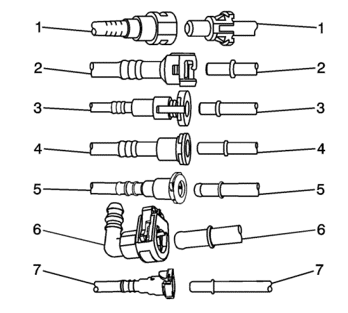
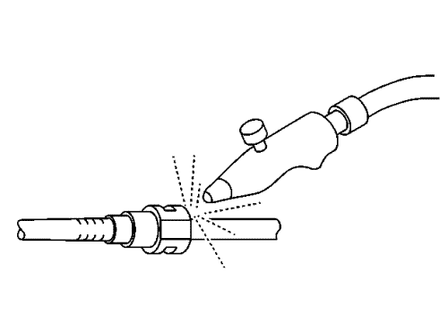
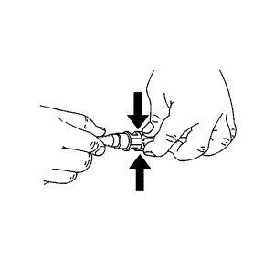
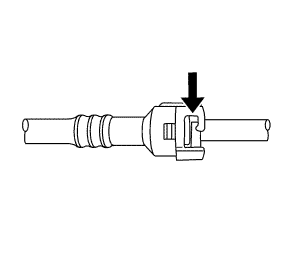
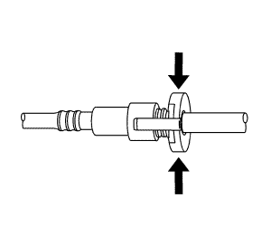
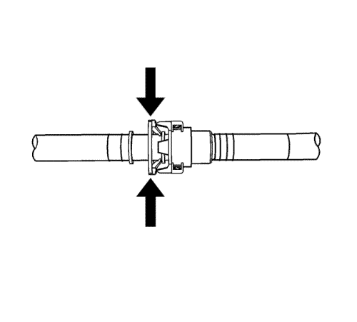
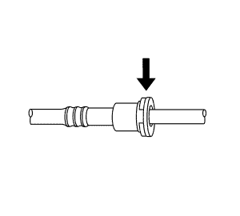
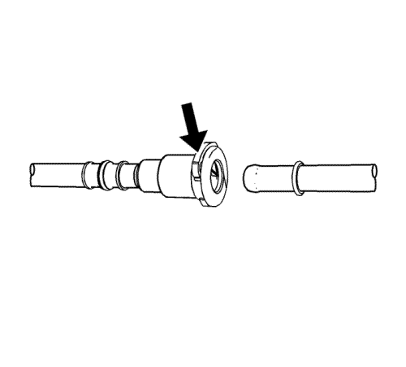
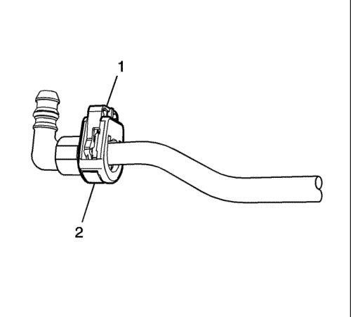
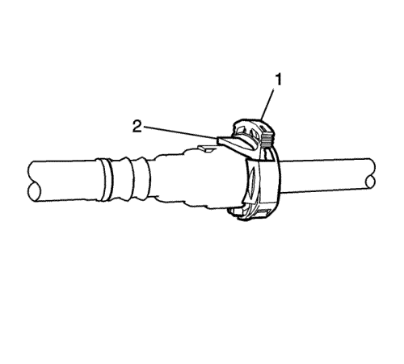

Advertencia: Consulte Advertencia sobre la gasolina y sus vapores en la sección Prólogo

Nota: En el vehículo se usan varios tipos de adaptadores de acoplamiento rápido de emisión de vapores y de collares de plástico de combustible.
| • | Apertura por apriete (3) |
| • | Retén de deslizamiento (4) |
- Reduzca la presión del sistema de combustible antes de reparar cualquier conexión del sistema de combustible. Consulte Descarga de la presión del combustible .

Advertencia : Aplique siempre unas gotas de aceite de motor a los extremos de tubo macho antes de conectar los herrajes del tubo de combustible para reducir el riesgo de incendios y lesiones personales. Esto permitirá una conexión correcta y evitará una posible fuga de combustible. Durante el funcionamiento normal las juntas tóricas colocadas en el conector hembra se hincharán e impedirán una nueva conexión adecuada si no están lubricadas.
- Limpie la suciedad que pueda haber en el acoplamiento rápido con aire comprimido.

- Este paso es válido sólo para los conectores tipo Bartholomew. Apriete las lengüetas de apertura del acoplamiento rápido de plástico.

- Este paso es válido sólo para los conectores tipo Q Release. Abra el acoplamiento apretando la lengüeta hacia el otro lado de la ranura del acoplamiento.

- Este paso es válido sólo para los conectores de apertura por apriete. Apriete en el punto indicado por las flechas en los dos lados del anillo de plástico que rodea el acoplamiento rápido.

- Este paso es válido sólo para los conectores de apertura por apriete. Presione ligeramente el lado macho para deslizar la fijación de los retenedores, apriete en el punto indicado por las flechas en los dos lados del anillo de plástico que rodea el acoplamiento rápido.

- Este paso es válido sólo para los conectores de retén de deslizamiento. Abra el acoplamiento apretando sobre el lado de la lengüeta de apertura para presionarla un poco. Si la lengüeta no se mueve intente presionarla desde el lado contrario. La lengüeta sólo se moverá en una dirección.

- Este paso se aplica únicamente para los conectores de tipo Global. Presione el conector hacia al tubo para liberar la presión. Mantenga presionado el mecanismo de liberación y tire del conector directamente hacia afuera.

- Este paso se aplica únicamente para los conectores de tipo Bloqueo TI. Presione el conector hacia al tubo para liberar la presión. Libere el cierre redundante (1) con dos dedos o con una herramienta de punta plana. A continuación, mantenga presionado el mecanismo de liberación inferior (2) y tire del conector directamente hacia afuera.
Advertencia: Consulte Advertencia sobre liberar presión de combustible en la sección Prólogo

- Este paso se aplica únicamente para los conectores de tipo Bloqueo Seguro. Presione el conector hacia al tubo para liberar la presión. Libere el segundo cierre (1) con dos dedos. A continuación, mantenga presionado el mecanismo de liberación inferior (2) y tire del conector directamente hacia afuera.
- Pase un paño limpio por el extremo macho del tubo.
- Inspeccione los dos extremos del cierre por si hubiera suciedad o rebabas.
- Limpie o sustituya los componentes si es necesario.